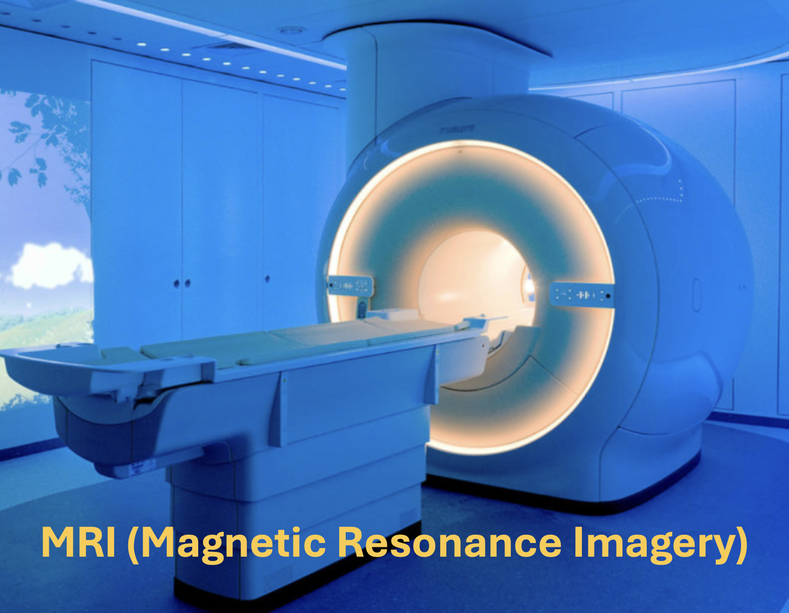
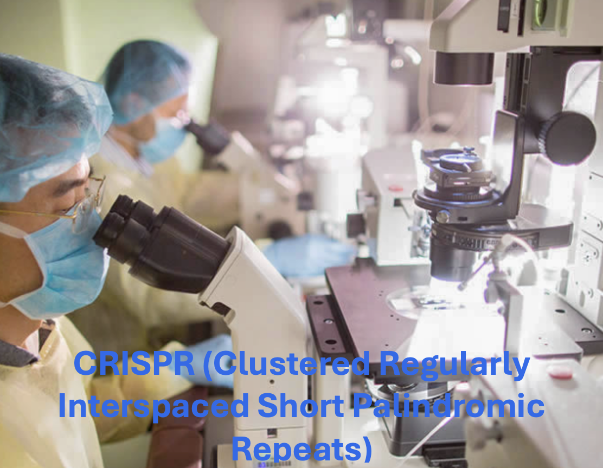
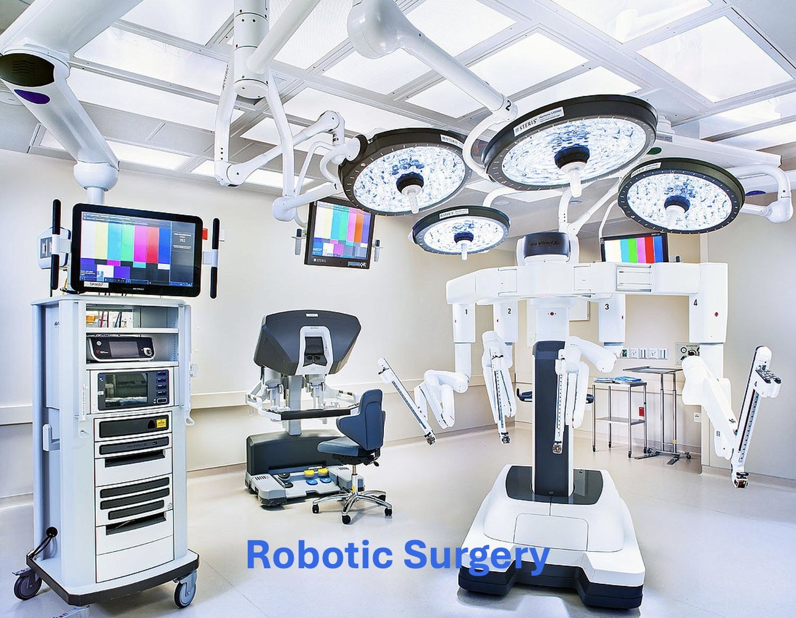
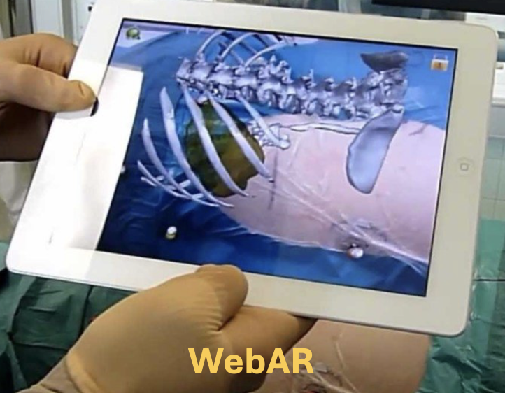

Technology is developing in all fields of science because of its preciseness, efficiency and ability to detect issues and properties that humans are unable to find alone. In health science, technology and machinery can perform diagnostics on the human body and remove or repair issues. There is portable technology for patients, so they do not have to travel to the doctor everytime they feel unwell, they can diagnose with technology at home.
Examples of Technologies used for Treating Disease



